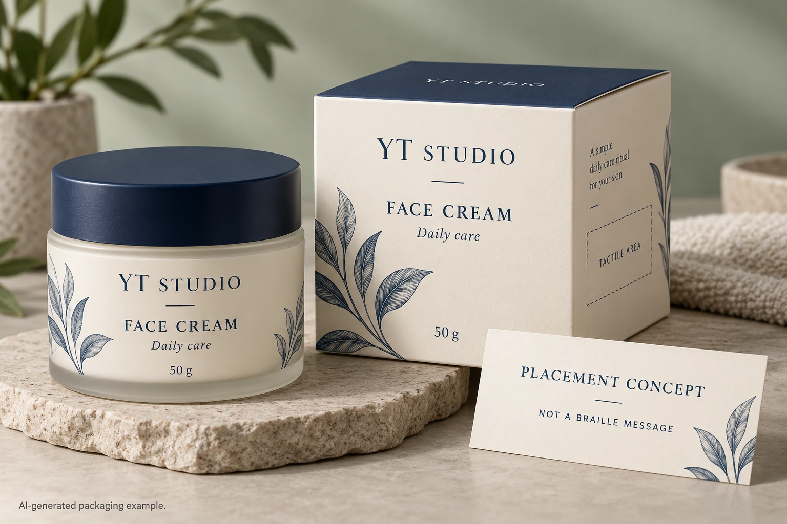
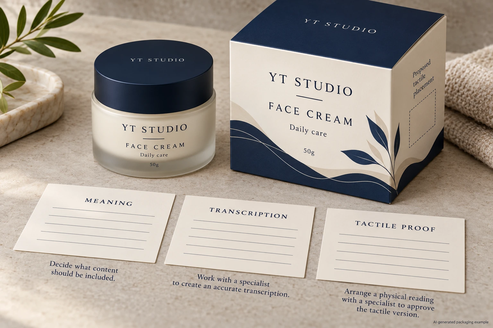

Putting dot shapes in cosmetic artwork does not complete a braille requirement. A usable handoff needs approved meaning, qualified transcription and review of the raised physical result on the intended pack. Treat those as separate decisions with named reviewers.
For a packaging manager commissioning an accessibility feature, the first question is what a reader should be able to identify. A decorative raised pattern and braille are different jobs. Do not ask a designer to guess the message from an online alphabet image or treat an attractive rendering as a reading proof.

Start with the reader's information task
Have the brand specify the intended wording and use. Is the purpose to distinguish product variants, identify a product or communicate another defined message? Clarify the languages and intended markets. Keep the print copy and braille meaning connected without assuming that the same space accommodates both.
Ask a qualified braille party which code and transcription approach apply to that use. The Braille Authority of North America's signage guidance explains that codes depend on language and context and recommends qualified proofreading. Its subject is signage. This article does not transfer its signage dimensions, placement rules or legal requirements to cosmetic packaging.
Likewise, do not borrow medicine-packaging requirements simply because a cosmetic package resembles a medicine carton. Have the brand's competent reviewer determine applicable product and market obligations. This guide addresses the production handoff for a requested feature, not a universal legal requirement to add braille.
Keep approved wording distinct from dot artwork
Maintain a source record containing the approved wording, language, intended meaning and revision. Have the qualified transcription party supply and check the corresponding production reference. Identify who is allowed to change that reference and how a later wording change returns for review.
The designer should know which elements are controlled information. Moving, stretching or simplifying dots as if they were decorative ornaments can undermine the intended reference. Ask the qualified and production parties to agree how the approved transcription must be carried into the artwork and output.
For multilingual packs, keep this handoff connected to the copy mapping guide. Approval of one printed language panel does not establish that a braille transcription in another context is correct. Record the relationship rather than calling everything the translated label.
A screen proof cannot establish the raised result
Ask the supplier which supported process it proposes and which physical sample can represent it. An embossed effect, a raised coating or another construction has to be identified as an actual proposal. Do not assume that a general capability to create tactile decoration includes a qualified braille service.
Agree the relevant production criteria and reading review with the competent parties. Have them identify the actual finished construction, sample format and acceptance reference. This article sets no dot height, spacing, pressure or process recipe. Those decisions need the appropriate code, packaging context and supported production arrangement.
Review the sample on the assembled pack where that is the intended use. Include the placement, curvature, edges and nearby features in the agreed scope. A flat appearance sample may help discussion while leaving the final reading and handling questions open.
Use a meaning-to-pack approval record
This editorial handoff record helps keep the approvals traceable. It is not a braille translation or an accessibility certification.
| Approval layer | Input | Required acknowledgement |
|---|---|---|
| Meaning | Brand-approved wording and intended reader task | Brand content owner |
| Transcription | Language, applicable code, controlled reference | Qualified braille party |
| Artwork | Placement and exact transcription asset revision | Designer and qualified reviewer |
| Physical output | Proposed process and representative raised sample | Supplier and competent tactile reviewer |
| Assembled pack | Actual location, container and nearby features | Packaging owner and agreed reading reviewer |
| Release | Accepted sample, files and remaining limitations | Named release owners |
Begin with meaning and transcription. Incorporate the controlled reference into the artwork, obtain the agreed physical sample and commission its reading and production review. If the message changes, return the affected approval layers to their owners. Do not allow a familiar product name to bypass the transcription check.
Hold the affected feature if nobody has checked the braille meaning, the sample is only a visual model or the final placement differs materially from the reviewed pack. State what remains unresolved and ask the responsible party for the next specific evidence.

Compare a narrow message with an overcrowded request
A hypothetical brand may want a concise identifier that helps distinguish two visually similar products. That gives the qualified parties a focused message and a defined reading task to evaluate. The brand still needs the relevant physical proof; brevity alone does not establish success.
Another brief may attempt to duplicate a long printed panel in a small decorative area. Ask the competent parties to assess that proposal before promising a label size or process. The team may need to revise the information task, location or packaging arrangement. Shrinking the dots until the layout looks tidy is not a sound approval method.
The raised decoration application guide covers the separate handling questions for tactile constructions. It can support the packaging discussion, while qualified braille review remains a distinct responsibility. A pleasant tactile logo does not validate the information alongside it.
Quote the scope that is actually available
Ask which parts of transcription, artwork preparation, physical sampling and production the proposed suppliers can undertake. Keep an external specialist's role identifiable. Do not imply a complete service from a photograph or a generic finishing list.
For a cosmetic label inquiry, provide the container, dimensions, quantity per design, approved wording, intended markets and qualified transcription reference if available. Mark the proposed tactile area and the remaining reviewer or sample gap. The form prepares a message; send references separately by email or WhatsApp. Request a supported production proposal for an already defined information task.